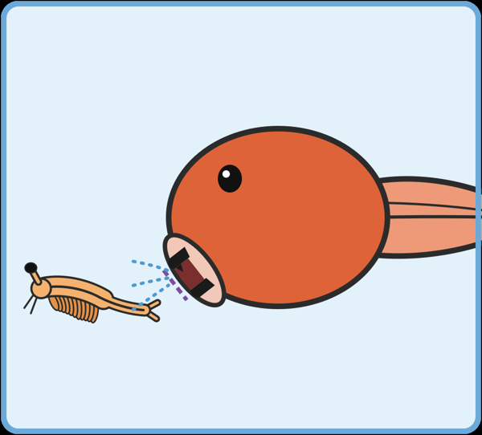
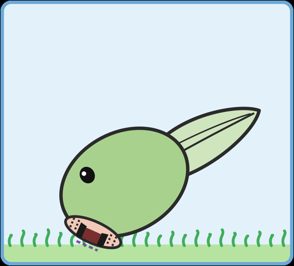
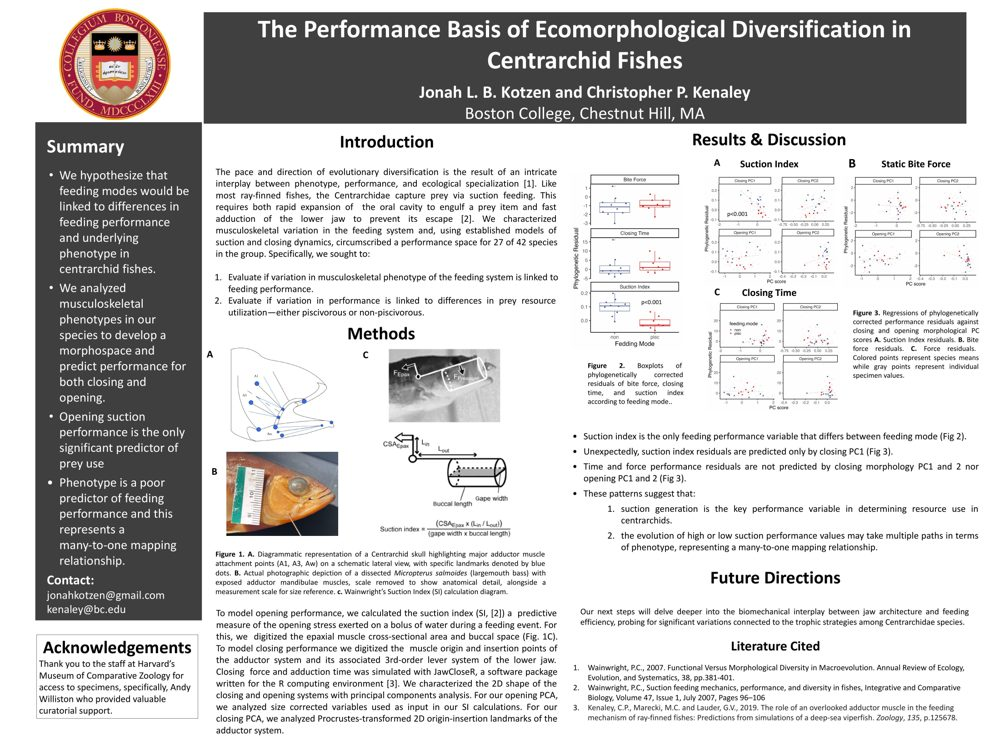
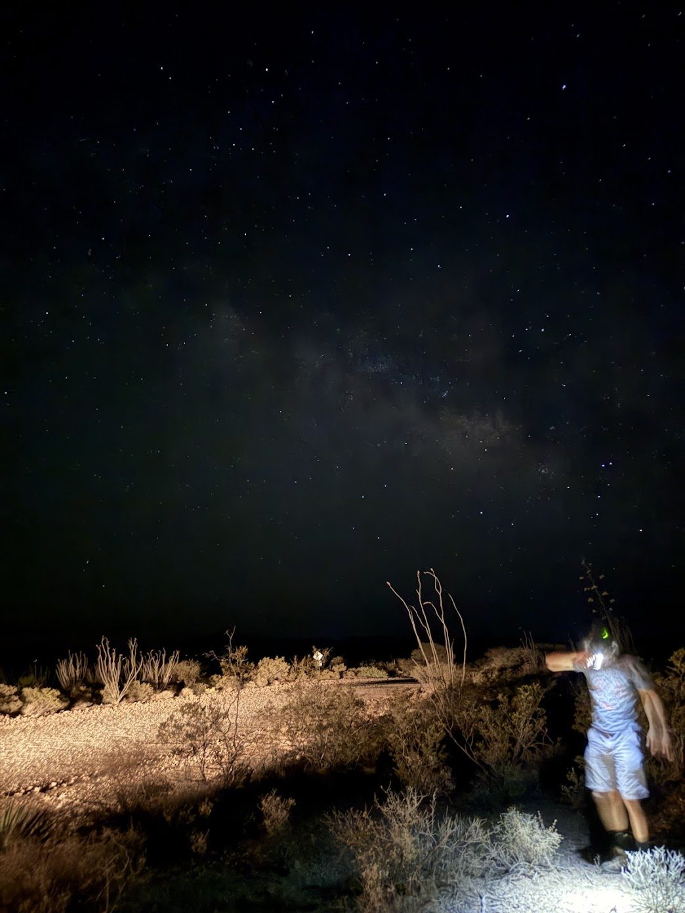
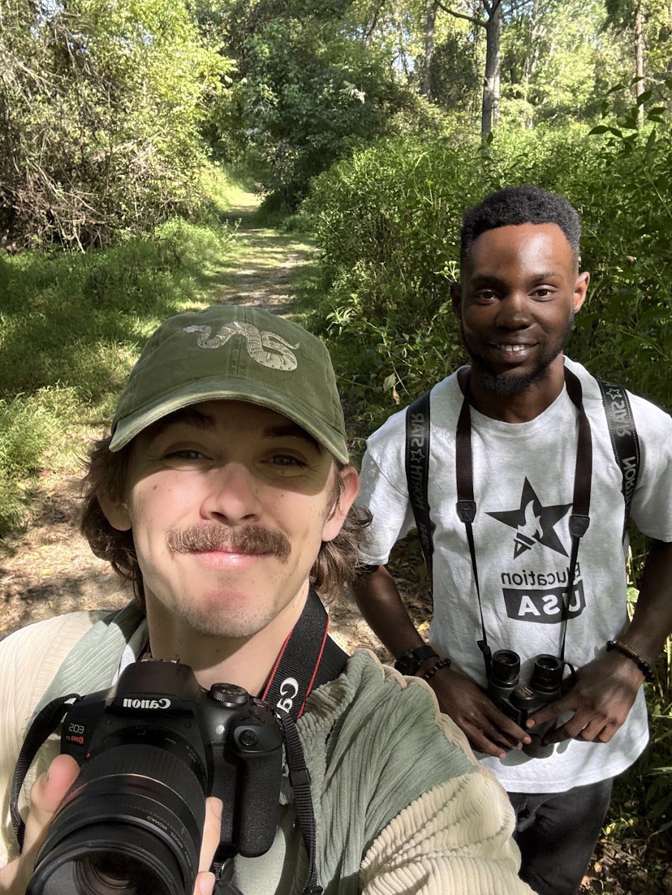
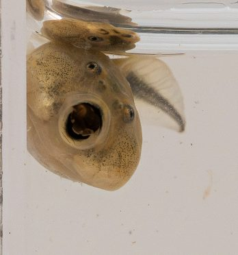
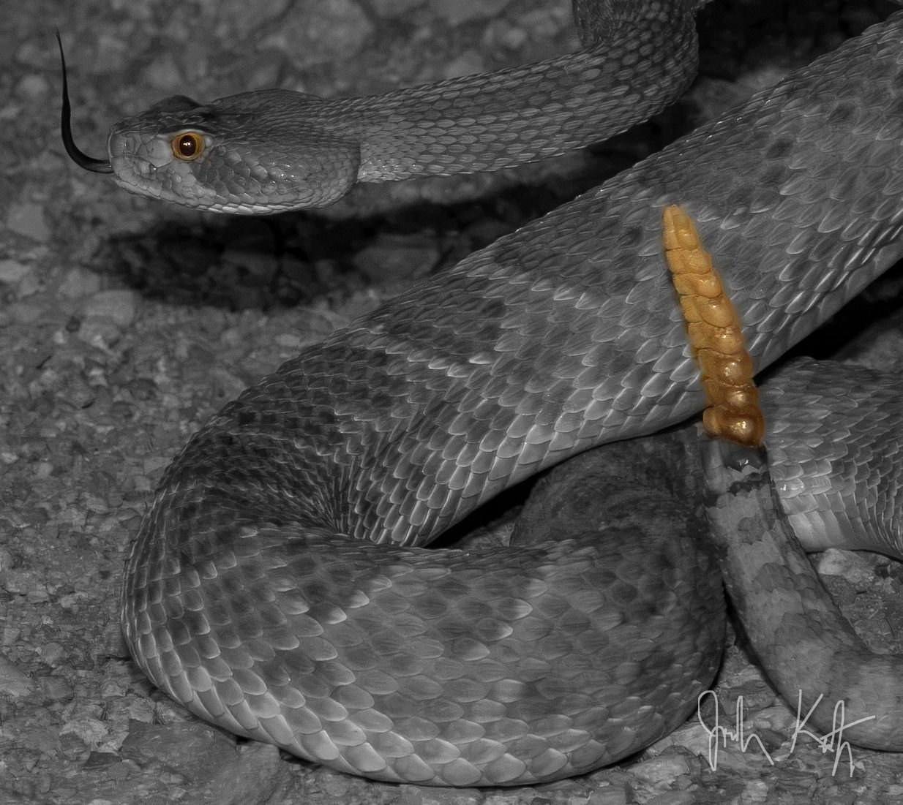
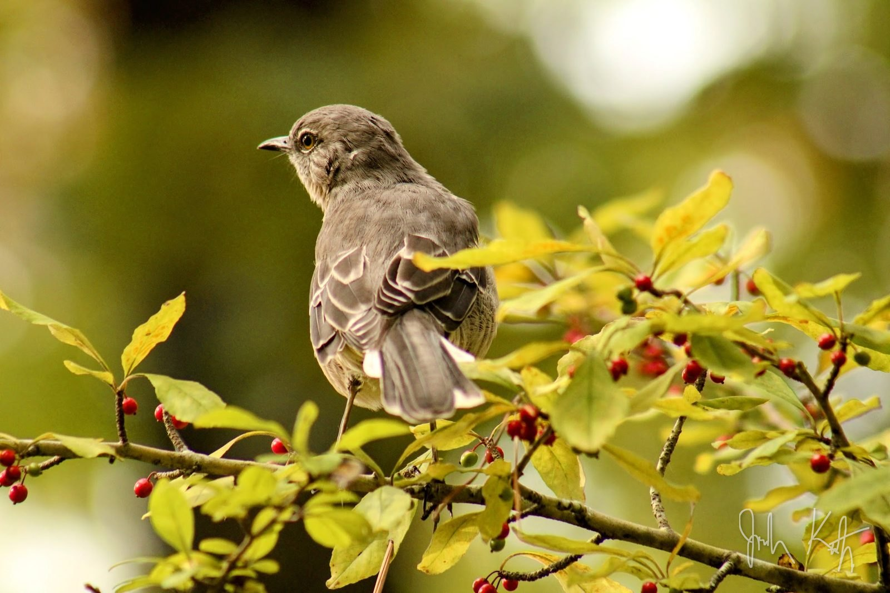
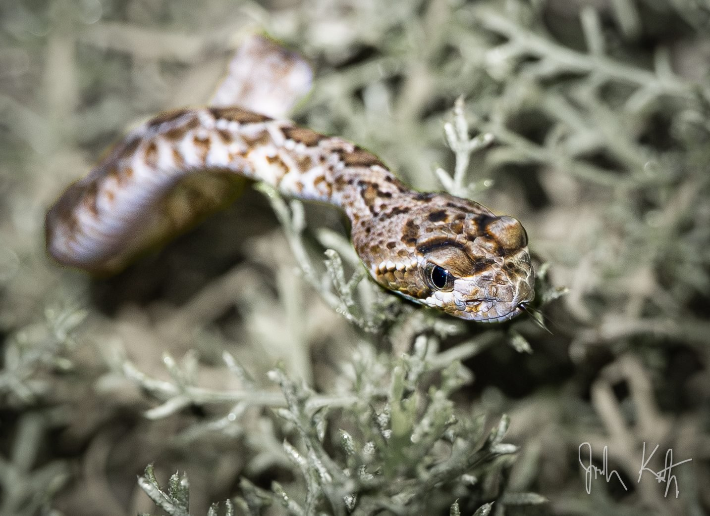

In prep
Kinematics and linkage mechanics of the lower jaw in ray-finned fishes: a compliant symphyseal joint facilitates buccal expansion Article
PhD Student · Pfennig Lab · UNC Chapel Hill
Evolutionary biologist from West Palm Beach, Florida. I study how organisms use developmental information to anticipate the conditions they will face, and how that shapes what they become.

01 / Research
Spadefoot toads breed in desert rain pools that can dry within weeks. From a single clutch, siblings can develop into algae-scraping omnivores or shrimp-eating carnivores with enlarged jaw muscles, a notched beak and a short gut.
I work across phenotypic plasticity, resource polyphenisms and biomechanics to ask how development reads the environment, sometimes before hatching, and how feeding performance shapes selection on the forms that result.
Spadefoot embryos share their pond with fairy shrimp for about two days before they can eat them. In my experiments, embryos that only sensed baby shrimp hatched larger, while embryos bumped by adult shrimp hatched earlier and smaller. Next: what they sense, and how anticipation evolves from ordinary responsive plasticity.
Lab colony + wild SWRS families · review in prep with D. Pfennig


Why are intermediate tadpoles less fit? I built a 1,000 fps filming rig with a 45° mirror for lateral and ventral views at once, then filmed tadpoles striking fairy shrimp and scraping algae, to test whether intermediates do worse than each specialist at its own job.
149 tadpoles · carnivores, omnivores, intermediates & S. couchii · DLTdv8 · with T. Hedrick · watch
Fairy shrimp eggs wait out the dry season in pond mud. With Sheila Patek, I'm hatching shrimp from Arizona pond sediment to ask how they evolve in ponds where carnivores are common and the water vanishes fast.
Sediment cores · common-garden hatching · with S. Patek (Duke)
Before UNC
Boston College
2022–2024
With Prof. Christopher Kenaley, I asked how jaw morphology in sunfishes and their relatives translates into feeding performance. I dissected the A1, A3 and Aω jaw-muscle divisions in specimens from the Harvard Museum of Comparative Zoology, modeled jaw closing with the R package JawCloseR, and used suction-index residuals to predict feeding mode. The results did not always match what morphology alone predicts.

02 / Publications
03 / Talks & posters

Kotzen, Hedrick & Pfennig · Regional SICB meeting, UNC Chapel Hill
Half a vacuum plus half a rake: are intermediate tadpoles a decent multitool, or bad at both jobs?
View full poster (PDF)04 / Mentoring & service
The parts of science I enjoy most outside the data are the ones that connect people: bringing new students into research, and building the spaces where a department actually talks to itself.
I mentor undergraduates in the Pfennig Lab, including independent research projects (BIOL 395), from reading the literature to running their first experiments.
As president, I represent UNC Biology grad students to the department, including programming the 2026 department retreat. Before that, I was BGSA's GPSG senate representative.
I run the CBC website and listserv and coordinate a campus flyer campaign that puts biodiversity facts up around UNC.
05 / CV
Proposals NSF GRFP research plan · 2026 fellowship NSF GRFP research plan · 2025 honorable mention SWRS field research award proposal · 2026
06 / Press
07 / Photos
Fieldwork & herping







Wildlife photography






08 / Videos
Tadpoles rasping algae (slowed 17×), then lunging at fairy shrimp (slowed 167×). This is the raw material for my performance measurements.
A side-on look at a tadpole working its beak along the bottom of the tank, in slow motion.
A spadefoot tadpole swims up to the glass in the filming tank.
Spadefoot embryos developing alongside live shrimp, the cue in my anticipatory plasticity experiments.
09 / Off the clock